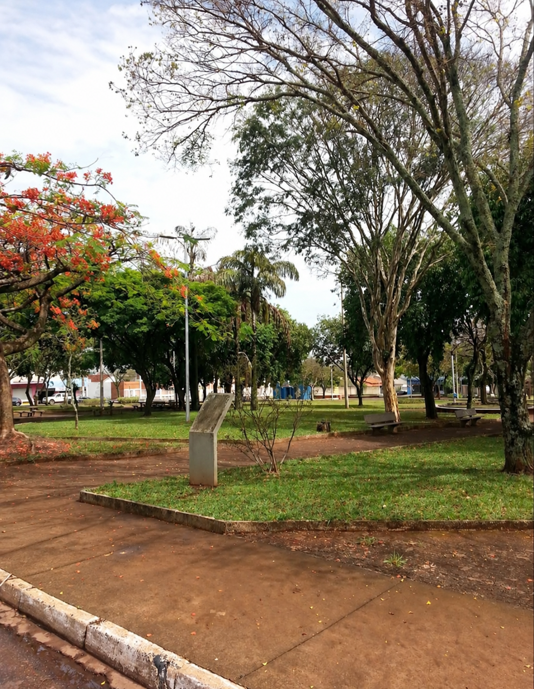

Sobre a praça
A Praça Américo Ferreira de Abreu é um dos principais pontos de convivência, lazer e integração comunitária do bairro Santa Mônica, em Uberlândia. Reconhecido por sua atmosfera acolhedora e densamente arborizada, o espaço desempenha um papel fundamental na saúde urbana dos moradores locais, atuando como um refúgio verde que estimula a prática de exercícios e o descanso ao ar livre.

ENCONTROS NA PRAÇA
Eventos cadastrados
Uso Comunitário e Ecossistema
Mais do que uma área de passagem, a praça carrega uma forte vocação de convivência social e preservação ambiental para o bairro Santa Mônica. Seus principais pilares de apropriação são:
- Eventos e Integration Local: Devido à proximidade com a Paróquia Matriz Santa Mônica, o espaço da praça é frequentemente utilizado como extensão comunitária para a realização de tríduos, festividades religiosas e feiras beneficentes ao ar livre.
- Refúgio de Biodiversidade: A praça conta com árvores de médio e grande porte integradas à fauna urbana regional, servindo de abrigo e descanso para espécies de pássaros nativos no meio da malha urbana de Uberlândia.
- Potencial de Requalificação: Por focar no convívio e no ecossistema, o espaço é o cenário ideal para projetos ambientais, plantio de mudas do Cerrado e encontros socioculturais dos moradores.
ENCONTRE A PRAÇA
Venha conhecer.
Como chegar de transporte público:
A praça conta com pontos de ônibus muito próximos nas avenidas do entorno. Você pode utilizar as linhas de transporte coletivo de Uberlândia que atendem a região do Santa Mônica, como as linhas A105, T610, I231 ou I232.
SUA VOZ IMPORTA
Ajude-nos a melhorar a praça
Horario de atendimento 12h às 17h